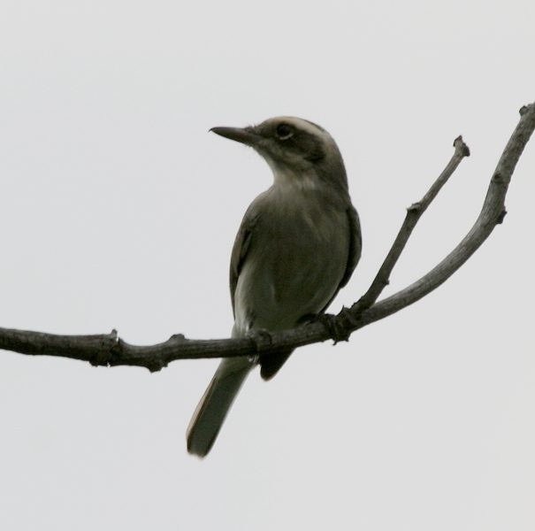

कॉमन वुडश्राइकCommon Woodshrike
Tephrodornis pondicerianus · Vangidae · BRD-0212

- Scientific name वैज्ञानिक नाम
- Tephrodornis pondicerianus (Gmelin, 1789)
- Family कुल
- Vangidae
- Hindi हिंदी
- कॉमन वुडश्राइक
- Local names स्थानीय नाम
- common woodshrike, woodshrike
- Status here यहाँ की स्थिति
- native
- Movement आवागमन
- Resident, here all year
- Known from कहाँ दर्ज
- Others have published records from the Basti–Ayodhya districts बस्ती–अयोध्या के ज़िलों से दूसरों के प्रकाशित अभिलेख
- IUCN IUCN
- LC
- Review समीक्षा
- audited and independently read
When to look कब देखें
Present all year. साल भर मौजूद।
Uses and possibilities उपयोग और संभावनाएँ
Drawn from the documented uses in the profile below, where each is labelled traditional, current or a research lead. All uses →
Tell it apart from इनसे अलग पहचानें
कॉमन वुडश्राइक / Common Woodshrike
Tephrodornis pondicerianus (Gmelin, 1789) — Vangidae
कॉमन वुडश्राइक — काली और सफेद चिड़िया जो पूर्वी उत्तर प्रदेश के जंगलों और बागों में साल भर रहती है। इसकी शक्तिशाली चोंच, सतर्क व्यवहार और तेज आवाज़ इसे पहचान देती हैं। यह छोटे जानवर, कीड़े और छोटी चिड़ियों का शिकार करता है।
Quick Identification त्वरित पहचान
| Feature | Description |
|---|---|
| Size | Small to medium; 17–18 cm long |
| Plumage | Black and white (pied) pattern |
| Head | White crown and ear-coverts; black nape |
| Back | Black with white patch |
| Wings | Black with white spots and edges |
| Underparts | White with black markings |
| Bill | Stout, slightly hooked; powerful |
| Behaviour | Active, alert; hunts insects and small birds |
Field tip: A striking pied (black and white) bird of woodlands and gardens. The bold black and white pattern, stout bill, and active behaviour are distinctive. Often seen in small groups moving through tree canopy.
हिंदी — कैसे पहचानें:
काली और सफेद चिड़िया।
मजबूत चोंच।
जंगलों के पेड़ों में।
सतर्क और सक्रिय।
Morphology आकारिकी
Biometrics:
| Measurement | Range |
|---|---|
| Total length | 170–180 mm |
| Wing | 88–100 mm |
| Tail | 70–80 mm |
| Bill | 13–16 mm |
| Tarsus | 16–19 mm |
| Weight | 22–30 g |
Size: 17–18 cm long; wingspan 27–30 cm.
Plumage: Crown, nape, and upper back black. White supercilium and ear-coverts. White patch on back. Wings black with white spots on coverts and white fringes. Tail black. Underparts white with black flank streaks and black markings on breast-sides.
Sexual dimorphism: Minimal. Males may show slightly brighter white patches.
Head: White supercilium and ear-coverts; black cap and nape; white lores.
Bill: Stout, fairly long, slightly hooked at tip; adapted for catching and killing small prey.
Legs and feet: Grey; relatively short; adapted for perching.
Juveniles: Similar to adults but with duller and less contrasting plumage.
Vocalisations. Call repertoire:
- Contact call: A loud chit-chit or whe-whe, given in groups.
- Alarm call: Sharp scolding calls.
- Song: A series of loud, clear notes; chit-chit-tu-tu-tu.
हिंदी: जोर की "चीट-चीट" आवाज़। समूह में तीक्ष्ण कॉल। अलर्ट होने पर तीव्र गीत।
Behaviour & Ecology व्यवहार और पारिस्थितिकी
Predator of small prey: Common Woodshrike hunts small insects, spiders, and occasionally small birds and lizards. It feeds on:
- Insects and spiders
- Grasshoppers and crickets
- Small lizards
- Occasionally small birds and nestlings
Hunting: Hunts from trees, gleaning insects from foliage and bark. Also makes short sallies to catch flying insects. Sometimes forages on ground.
Social behaviour: Solitary or in pairs year-round. Maintains territories. Sometimes in loose family groups post-breeding.
Roosting: In trees and bushes.
Predators: Snake eagles, occasionally larger raptors. Chicks vulnerable to snakes and corvids.
Habitat: Strictly woodland-associated; needs trees and perches.
हिंदी: अकेला या जोड़ों में। पेड़ों पर बैठकर शिकार करता है। छोटे जानवर खाता है। जंगल के साथ जुड़ा हुआ।
Life Cycle / Phenology जीवन चक्र
| Month | Event |
|---|---|
| January–February | Resident; feeding |
| March–May | Breeding season; nest building and egg laying |
| May–July | Incubation and fledging |
| July–August | Fledglings; feeding young |
| September–October | Post-breeding dispersal; family groups |
| November–December | Settled territories; pair bonding |
Breeding: Resident breeder in eastern UP. Builds cup nest in tree, often at moderate height. Clutch typically 2–4 eggs. May have 2 broods per season.
Moult: Prebasic moult occurs post-breeding (July–September).
Site fidelity: Strong; returns to same breeding territories in successive years.
हिंदी: साल भर यहाँ रहता है। मार्च से जून में प्रजनन करता है। पेड़ों में घोंसला बनाता है। दो बार संतान दे सकता है।
Host Plants or Prey आहार
| Food Type | Examples | Feeding Behaviour |
|---|---|---|
| Insects | Grasshoppers, beetles, flies | Gleaned from foliage and bark |
| Spiders | Various spiders | Picked from vegetation |
| Small lizards | Small skinks and geckos | Hunted from trees |
| Small birds | Sparrows, sunbirds (rare) | Predated on occasionally |
हिंदी: कीड़े, मकड़ियाँ और छोटे जानवर खाता है। पेड़ों की पत्तियों से कीड़े निकालता है।
Predators / Natural Enemies शत्रु
- Avian predators: Snake Eagle, occasionally larger raptors
- Mammalian predators: Snakes (chicks)
- Nest predators: Snakes, crows, monitor lizards
हिंदी: बड़ी शिकारी चिड़ियाँ इसका शिकार कर सकती हैं। अंडों को सांपें खतरे में डालते हैं।
Agricultural / Human Relevance कृषि प्रासंगिकता
Protected species: The Common Woodshrike is protected under the Wildlife (Protection) Act 1972. Hunting is prohibited in India.
Pest control: Feeds on insects including grasshoppers and beetles, contributing to natural pest management in orchards and gardens.
Indicator species: Presence indicates healthy woodland and garden ecosystems with good insect populations.
Forest health: Dependent on trees and woodland cover; presence indicates relatively intact habitat.
Cultural relevance: Known to birdwatchers for its striking appearance and alert behaviour.
Habitat loss: Threatened by loss of woodland cover and tree removal.
हिंदी: यह विधि अधिनियम 1972 के तहत संरक्षित है। इसका शिकार करना कानूनी रूप से निषिद्ध है।
Expected Locally स्थानीय रूप से अपेक्षित
Not a field record. Written from published accounts for eastern Uttar Pradesh. No confirmed local sighting yet — if you have seen it, that is what the atlas needs.
अभी तक स्थानीय पुष्टि नहीं। यह विवरण प्रकाशित स्रोतों से है, किसी अवलोकन से नहीं।
Year-round range: Expected throughout eastern UP in deciduous woodlands, forest edges, and cultivated areas with tree cover. GBIF holds published records from these districts. Particularly suitable habitats include remnant sal forests, riparian woodlands along the Ghaghra and Rapti, and gardens and parks with mature trees.
Habitat preference: Deciduous woodlands and forest edges; also gardens and orchards with tall trees.
Peak season: Year-round resident; more obvious during breeding season when defending territories.
Detection: Listen for its loud calls in wooded areas; watch tree canopy for movement. Early morning and late evening are best for observation.
What a first record would be: A dated photograph or detailed observation of the bird in eastern UP submitted through the About page, with location and date.
हिंदी: जंगलों और बागों में साल भर अपेक्षित। घाघरा और राप्ती के पास की साल की वन पट्टी में। पेड़ों की मौजूदगी जरूरी है। तेज आवाज़ से पहचान होती है।
Distribution वितरण
Global range: Indian subcontinent and South-East Asia. Resident populations.
In India: Distributed throughout India in suitable woodland habitats.
In Uttar Pradesh: Throughout the state in woodland and cultivated areas with trees; particularly common in eastern districts.
In Basti district / eastern UP: Expected as a resident in remaining woodland and garden areas; status needs field confirmation.
Research Questions शोध प्रश्न
- What is the distribution and abundance of Common Woodshrike in eastern UP in relation to woodland cover?
- How do changes in tree cover and garden management affect breeding success and population numbers?
- What is the detailed diet composition across seasons?
- कितनी संख्या में छोटी चिड़ियों को यह पक्षी शिकार करता है?
- How does this species interact with other insectivorous birds in shared habitats? (A child can observe and record hunting behaviour.)
- क्या पेड़ों की संख्या में कमी से इस प्रजाति की आबादी भी घट रही है?
Similar Species मिलती-जुलती प्रजातियाँ
| Species | Key Difference | Hindi | Field Rule | |
|---|---|---|---|---|
| [[long_tailed_shrike\ | Long-tailed Shrike]] (Lanius schach) | Larger; different head pattern; longer tail | लंबी पूंछ वाली लड़का | Larger bird with different proportions and range. |
| [[white_bellied_drongo\ | White-bellied Drongo]] (Dicrurus caerulescens) | Similar colours but slimmer; drooping tail | सफेद पेट की ड्रोंगो | Drongo is slimmer with different posture and behaviour. |
Field rule: The Common Woodshrike is a distinctive pied (black and white) bird with a stout bill and alert behaviour. The combination of white supercilium, black cap, and white patch on back is diagnostic.
Taxonomy & Classification वर्गीकरण
Original description. The species was described by Gmelin in 1789. The type locality is Pondicherry, India.
Subspecies. Multiple subspecies; T. p. pondicerianus occurs in most of India.
Family and order placement. Order Passeriformes; family Vangidae (vangas and woodshrikes). The genus Tephrodornis contains small woodshrike species of Asia.
Phylogenetic notes. Related to other Tephrodornis species across Asia.
IUCN status rationale. Assessed as Least Concern (LC) globally. Populations are stable in suitable habitats. The species is dependent on tree cover. In India, it is protected under the Wildlife Protection Act 1972.
हिंदी: भारत में व्यापक रूप से पाई जाती है। जंगलों में रहती है। कानून से पूरी तरह सुरक्षित है।
Photo Gallery फोटो गैलरी
No photos yet — add field photos to media/species/common_woodshrike/ and run node scripts/sync_photos.js.
Wanted photos:
- Adult perched on branch
- Hunting behaviour
- Pair together
- Nesting behaviour
- Habitat: woodland
References संदर्भ
- Gmelin, J. F. (1789). Systema Naturae (13th edn). Vol. 1. Pp. 303–304.
- Ali, S. & Ripley, S. D. (1972). Handbook of the Birds of India and Pakistan. Vol. 7 (Squamae to Babaxes). Oxford University Press, Delhi. Pp. 189–192.
- Cramp, S. (ed.) (1992). Handbook of the Birds of Europe, the Middle East and North Africa: The Birds of the Western Palearctic. Vol. VI (Warblers). Oxford University Press. Pp. 303–308.
- Rasmussen, P. C. & Anderton, J. C. (2005). Birds of South Asia: The Ripley Guide. Smithsonian Institution, Washington, D.C. Pp. 471–473.
- GBIF Occurrence Data — Tephrodornis pondicerianus, India.
- IUCN Red List (2024). Tephrodornis pondicerianus — BirdLife International assessment. IUCN, Cambridge. Status: Least Concern.
Source file: species/fauna/birds/common_woodshrike.md